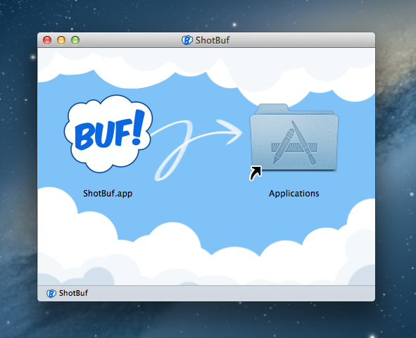
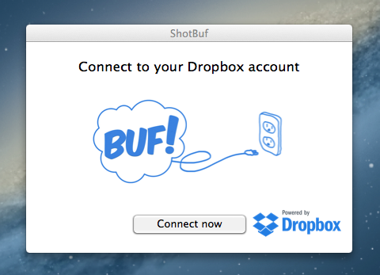
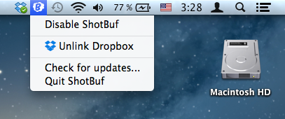

Usage help
Usage help
On this page you will find detailed description of ShotBuf features and usage manual.
Introduction
ShotBuf consist from two parts: desktop client and mobile client. Desktop client is the system statusbar (tray) application which grabs your pastes and pull them into Dropbox shared folder, so mobile clients could synchronize and get updated content from the folder.
To use ShotBuf you are required to have an Dropbox account. If you're not familiar with Dropbox let us follow Dropbox tour to learn more.
You should create Dropbox account, if you haven't done it already.
OS X application
Installation and supported versions
To install ShotBuf desktop Mac OS X application, follow the link http://shotbuf.com/d and press "Download for Mac" to download .dmg package if downloading didn't start automatically.
Supported OS X versions: Mac OS X 10.8 and later
When download is complete, open downloaded .dmg file and follow instructions:
Double-click on ShotBuf.dmg item in your Safari to open downloaded .dmg

Drag ShotBuf icon to "Applications" shortcut

Find installed ShotBuf application in SpotLight and run it
Allow OS X to open ShotBuf
Click "Connect now" in appeared window to connect ShotBuf to your Dropbox account

Login into Dropbox account
Allow ShotBuf to access App folder in your Dropbox
When blue icon added to status bar you may continue using ShotBuf on your mobile devices and your Mac.
ShotBuf drop-down menu exposes features you may use on your Mac: disable or enable ShotBuf to listen for Cmd+C shortcut and clipboard pastes, clear data stored into ShotBuf App folder, link to different Dropbox account.

Magic Command-C shortcut
When ShotBuf Application run and is enabled (status icon is blue), everything you copy into your clipboard by pressing Command-C will be tracked by ShotBuf Application. It allows you very clean and straightforward usability, because you aren't supposed to learn any hotkey-monkeys combinations to use it on your Mac.
Even more. You aren't supposed to use Command-C shortcut if you aren't familiar with it! Just copy to clipboard as you do it in your usual way and everything will work smoothly.
Sharing content from Mac to mobile devices
Share text notes, website and e-mail links
To share text note or web address select it and press Command-C. It will appear on the screen of mobile device shortly. Remember that your Mac ShotBuf Application should have blue status bar icon.

Copying William Shakespeare's sonnet from the OmmWriter application window.
Copying text from Microsoft Word.
Share images from browser
On any web page opened in Safari or your favorite browser press right mouse button to open drop-down menu and choose "Copy Image". It will start uploading into Dropbox and progress bar should appear on your mobile device.
If you use desktop Dropbox application, notification will pop-up during uploading process.
Copying image from "Thirty Years of Mac" Apple's website
Showcase artwork and mobile UI prototypes from famous image editing software
In Adobe Photoshop or similar editors you may use "Copy" action to copy selected image or part of image and showcase it instantly on your mobile devices.
Select the whole image or part, then press Command-C to copy image into clipboard or Command-Shift-C to copy layered image merged. Then progress bar will appear on the screen of mobile device running ShotBuf mobile application. After image uploading complete, image preview will appear. You then can view image in pixel-to-pixel precision. It looks like exceptionally convenient way to showcase UI prototypes and device specific artworks.
Copying image from Adobe Photoshop
Share screenshots
To share screenshots from your Mac use OS X provided shortcuts to capture screenshots into clipboard.
To capture the screen to clipboard and to ShotBuf press Command-Shift-Control-3.
To capture selected part of the screen press Command-Shift-Control-3.
Screenshots will appear as images in ShotBuf application.
Want more?
Looking for more hints and tips? Follow us, write us on Twitter on send your questions and recommendations to hey@shotbuf.com.
Happy Buf!-ing!